Stop Prompting, Start Building: A Real Guide to Coding Agents
Introduction
There is a lot of discussion about agents that sounds either magical or completely useless. My experience has been much less dramatic. They are not replacing engineering judgment, but they are absolutely replacing a bunch of annoying glue work that used to eat up my day.
The difference between “wow this is incredible” and “this thing is useless” often comes down to setup. A coding agent is only as effective as the environment you drop it into: your repo structure, your docs, your scripts, your prompts, and the tools you give it access to.
So rather than trying to predict the future of software engineering, here is the much more practical version: these are the habits and patterns that have made agents genuinely useful for me.
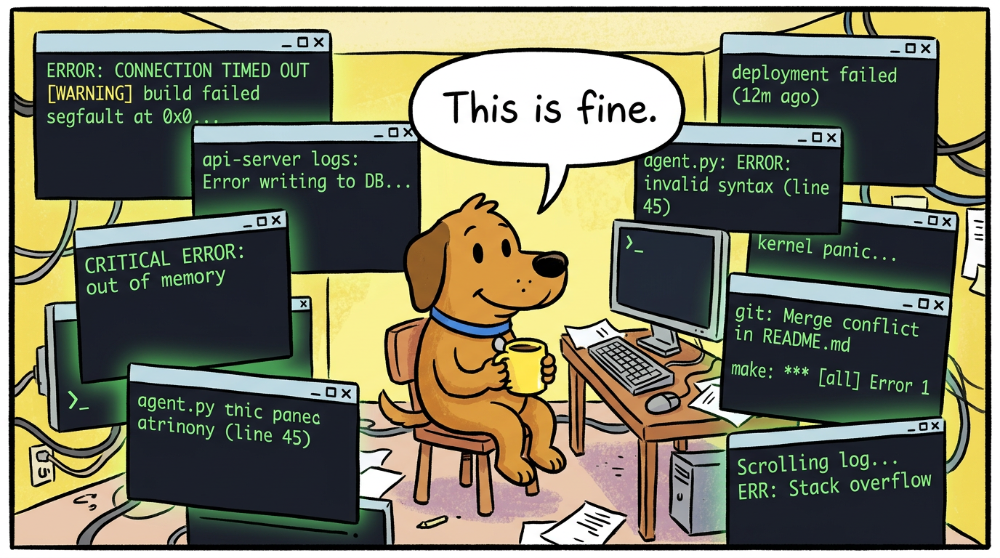
The Monorepo
For some of us, especially a few ex-colleagues, the word monorepo may be a trigger word. I have come to believe that a monorepo is more than a coding standard; it is a way of life. Keep everything in one fucking place.

This matters for humans, but it matters even more for agents. When code, scripts, docs, and config all live in one searchable place, an agent can actually navigate the system. It can search for symbols, inspect related files, trace dependencies, and answer questions without immediately getting lost.
The practical benefit is simple: discovery gets cheaper. You spend less time telling the model where things are, and the model spends less time hallucinating because it can just go and look. If your tooling setup forces an agent to jump between five repos, three wikis, and some cursed local script in a home directory, you are making the problem much harder than it needs to be.
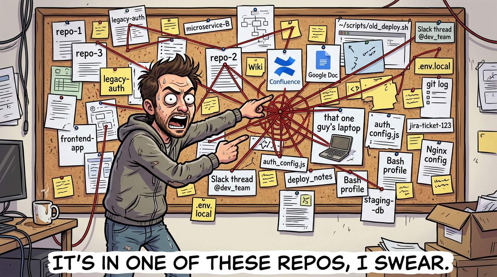
Sub-Agents, Skills, and Scripts
A skill is basically a reusable set of instructions that gets loaded when the model is doing a relevant task. A classic example is a PR workflow: format the code, run type checks, run tests, maybe generate a summary, then push.
Sub-agents are similar in spirit, but more powerful in practice. A skill gets appended into the current conversation context. A sub-agent spins up with its own context, does its work, and returns an output without polluting the parent session.
That separation is a big deal. I like to think of sub-agents as slightly functional-programming-coded helpers: give them an input, let them do a bounded task, get an output back. The parent session stays focused instead of accumulating every stray detail from every side quest.
This is where agents start beating plain scripts. A script is deterministic, which is great, but it cannot usually inspect its own output and decide what to do next. An agent can. One of my most useful examples is a pr-push agent that runs tests and, if something fails, tries to understand the failure and fix the code before continuing. That kind of branching behavior is where the extra intelligence actually pays for itself.
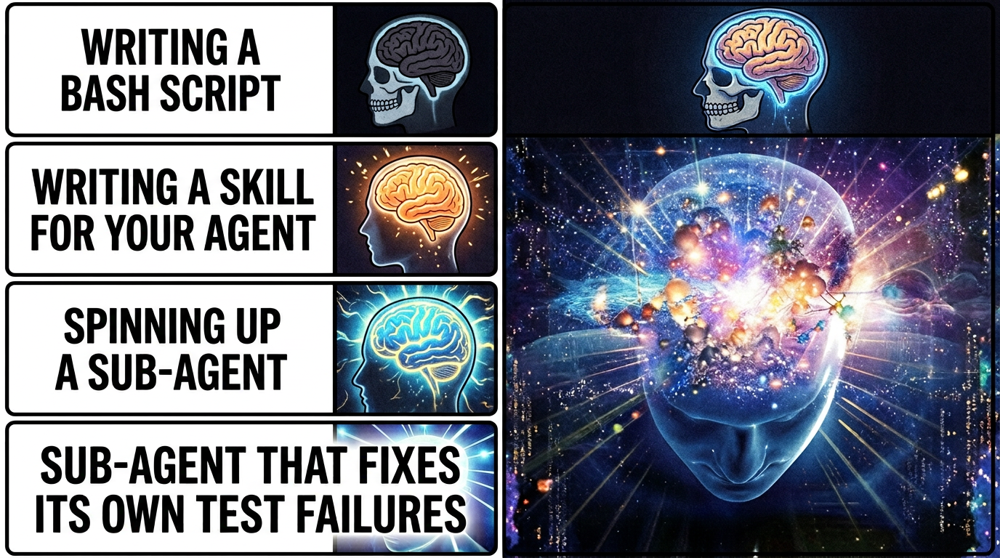
skill -> sub-agent -> sub-agent that fixes its own test failures" style="max-height: 400px; display: block; margin: 0 auto;">MC Motherfucking P
Ok, slow down. MCPs are not the only way to extend an agent, and in some cases they are not even the best way.
The best example for me is Atlassian. I absolutely hate how clunky and slow AF the Jira MCP feels. The Jira API, on the other hand, is pretty good. So instead of forcing the model through a painful tool path, I have the agent call the API directly when I need to create or update tickets.
That does not mean MCPs are bad. Quite the opposite. Some of them are ridiculously useful. Glean has been excellent for searching internal docs. We also have a data-MCP setup that lets me query a database in plain English. As someone who is not exactly a SQL wizard, that has been a massive quality-of-life improvement.
So my rough rule is this: use MCPs when they provide real leverage, not just because they exist. If a direct API call or a simple script is faster, clearer, and more reliable, do that instead.
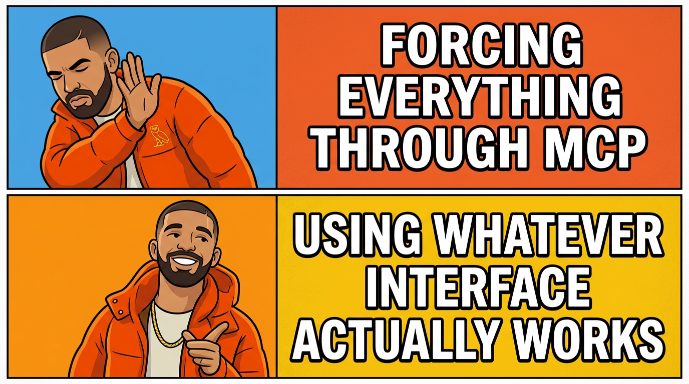
Write Scripts for Repeatable Work
Yes, I know I just spent a section praising agents.
Still, if something is truly repeatable, write a script.
Agents are great at figuring things out, adapting to messy context, and making judgment calls. They are not the ideal layer for a task that should behave exactly the same way every time. If you already know the steps, capture them in a shell script, Python script, Make target, or whatever else fits your setup.
Then let the agent call the script.
This gives you the best of both worlds: the repeatability and low cost of automation, plus the flexibility of an agent that knows when to invoke it. It also cuts token usage significantly because there is no reason to spend model context on work that can be done deterministically.
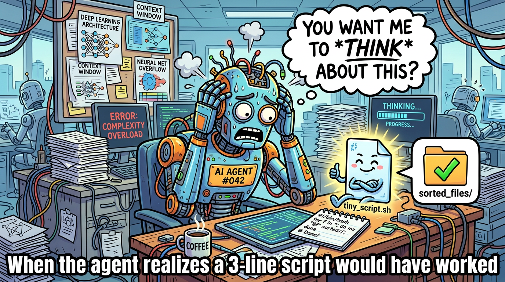
Build Your Own RAG
By this I mostly mean: document your useful conversations.
I keep a personal docs/ folder, and near the end of good sessions I often ask the model to take the useful parts and write them down. Sometimes it is a design decision. Sometimes it is a debugging lesson. Sometimes it is just a weird but important bit of tribal knowledge that I know I will forget in two weeks.
That ends up functioning like a very personal form of retrieval-augmented generation. Instead of relying only on whatever the model knows or whatever the company wiki happens to contain, I am steadily building a memory bank of things that were actually useful to me.
It is basically a second brain, except this one is searchable and less likely to disappear into a pile of unread notes.
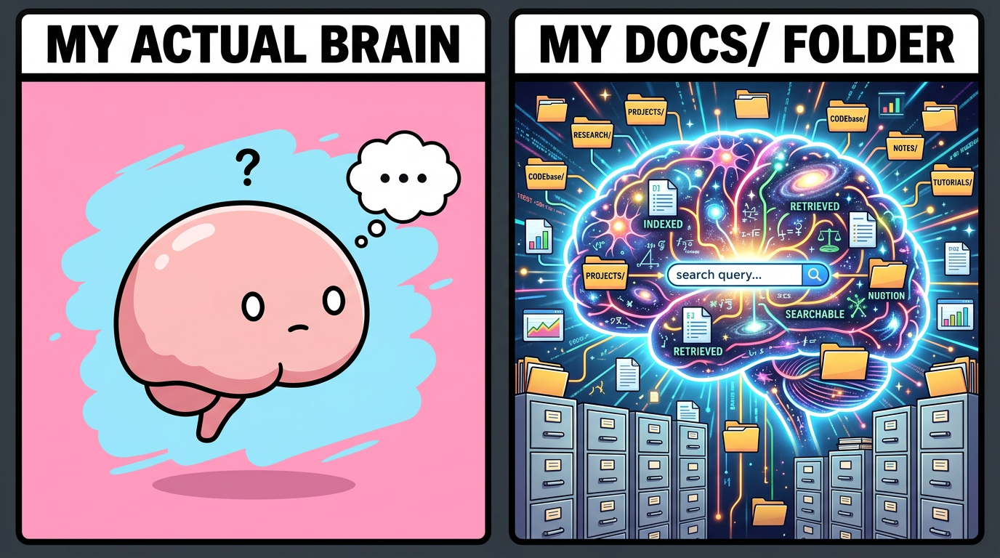
Symlink Everything Important
I learned this one the painful way.
At one point I accidentally deleted my ~/.claude/ folder and took out my agents, memories, and conversation history with it. That was enough to convince me that anything important should live somewhere I actually back up and version properly.
Since then, I have preferred storing prompts, agent definitions, summaries, and instruction files in a real docs or config repo, then symlinking them into the places different tools expect. If you use multiple agent frameworks, this gets even more valuable.
At Canva we are lucky enough to have access to a ridiculous number of AI tools. You can maintain separate global instructions for all of them, but what has worked well for me is keeping one source of truth and symlinking it into places like ~/.claude/CLAUDE.md and ~/.codex/AGENTS.md.
That way, when I update an instruction, I update it once.
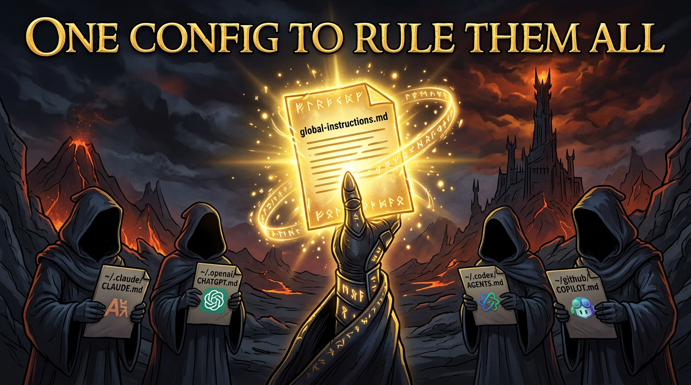
Browser Agents Are Underrated
Letting an LLM drive a browser is one of the fastest ways to make it feel like a real assistant instead of just a fancy autocomplete.
I use browser automation to do small but annoying tasks that involve clicking through web UIs, reading pages, and pulling information back into a useful format. One example is reading Zoom meeting summaries and turning them into a personalized to-do list. It is not glamorous, but it is exactly the kind of work I do not want to spend human energy on.
Browser agents are especially good when the data you need technically exists, but only behind a sequence of terrible menus and tabs. If a workflow requires navigating a website like a mildly patient intern, an agent can often do it just fine.
I use Playwright MCP for browser automation.
Let the Agent Read the Logs
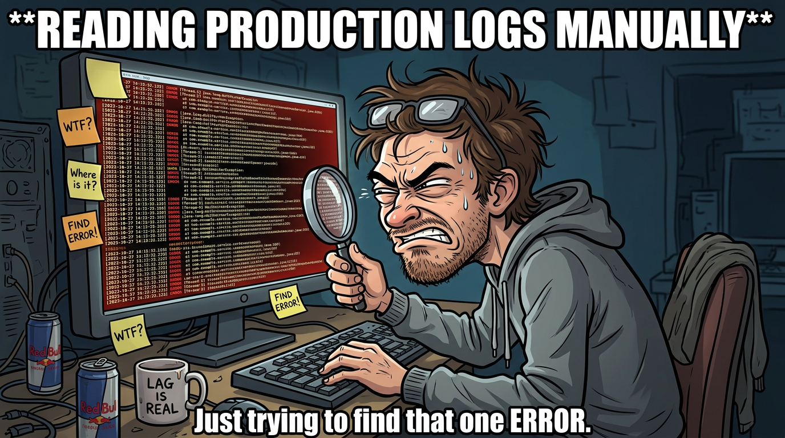
Letting an agent read logs is another huge unlock. Yes, I can debug by manually digging through error output. No, I do not think that means I should.
After using internal tooling that pulls relevant slices of logs and feeding them to an agent, I am increasingly convinced that large-scale log splunking was never really a human task. It is tedious, repetitive, and usually full of patterns that a model can spot much faster than I can.
This becomes even more valuable when you are debugging code that someone else wrote. Instead of spending half an hour reconstructing context from stack traces, you can have the agent summarize what happened, identify the likely failure path, and point you to the right files to inspect.
It does not remove the need for judgment. It just gets you to the interesting part sooner.
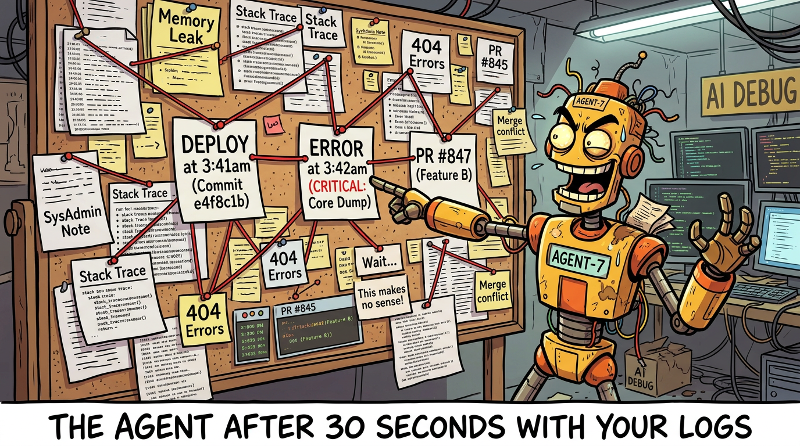
Looping
Some people call this a Ralph loop. Either way, it is one of the most effective patterns I have found.
The basic version is dead simple: tell the agent to run the tests, look at the failures, fix the code, and repeat until everything passes. That alone saves a surprising amount of time, because the agent does not get annoyed, does not lose context halfway through, and does not wander off to check Slack between iterations.
But loops go beyond fixing broken tests. One of the more interesting uses is lightweight research. Andrej Karpathy’s AutoResearch takes this to its logical extreme: give an agent a training setup, a metric, and a five-minute time budget, then let it loop through experiments autonomously overnight. You wake up to a log of a hundred experiments and hopefully a better model. I have used a much simpler version of this — not training LLMs overnight, but iterating on config values where the feedback signal is clear and the cost of a bad attempt is low.
The key ingredient is a reward signal. Without some way for the agent to evaluate whether its last attempt was better or worse, a loop is just an expensive way to go in circles. Tests, metrics, error output — anything that gives the model a gradient to follow turns a dumb retry into actual progress.
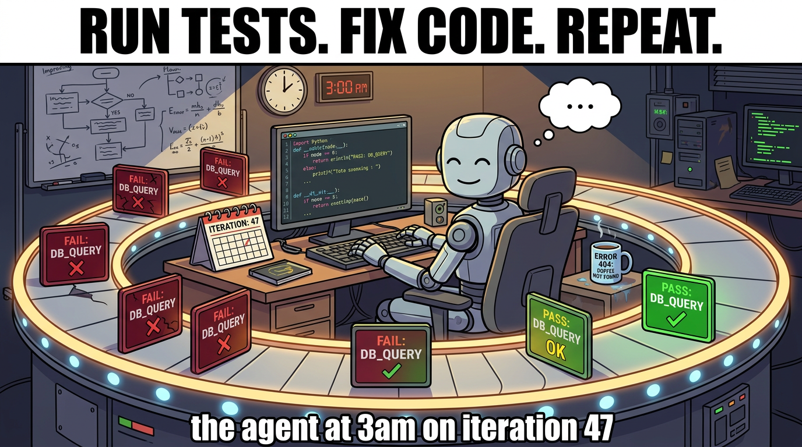
Summary
The main risk in the age of AI is not that we become less capable overnight. It is that we become sloppy about where judgment belongs.
The patterns above have worked for me because they push agents toward the tasks they are actually good at: searching, summarizing, navigating, branching on messy outputs, and reducing friction. They are much less impressive when used as a replacement for good repo structure, good scripts, or clear thinking.
If I had to reduce this whole post to one sentence, it would be this: agents work best when they are embedded into a well-organized system, not when they are expected to magically compensate for a chaotic one.
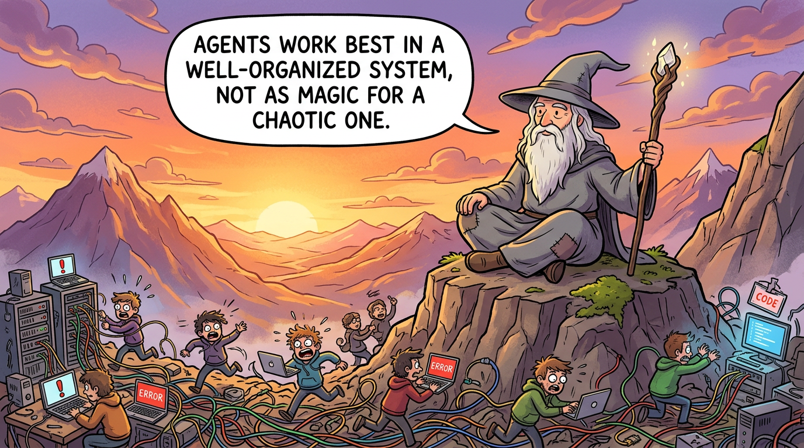
Appendix
Here is a snippet from my PR-to-Jira linker agent. Full disclosure: I do not know the Jira API well enough to have written this from scratch. I got Claude to do the first pass, and then I kept iterating on it until it became useful.
The prompt is mostly doing four things:
- Analyze the PR description and extract the actual intent of the change.
- Search the current sprint for related Jira tickets.
- Match only when the similarity is high enough to be trustworthy.
- Create a new ticket when nothing relevant exists.
One of the useful pieces is the search step:
curl -s -u "${ATLASSIAN_EMAIL}:${ATLASSIAN_API_TOKEN}" \
"https://canva.atlassian.net/rest/api/3/search/jql" -G \
--data-urlencode "jql=project = ${TEAM_NAME} AND assignee = currentUser() AND sprint in openSprints()" \
--data-urlencode "fields=key,summary,status,priority,description,created,updated,issuetype" \
--data-urlencode "maxResults=50" | jq '.'The rest of the prompt is just instruction scaffolding around that: how to compare tickets semantically, when to trust a match, and how to create a new ticket with sane defaults when no match exists.